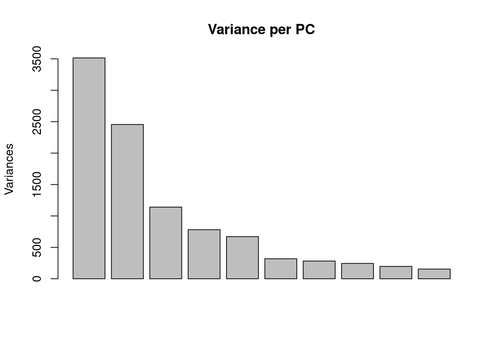
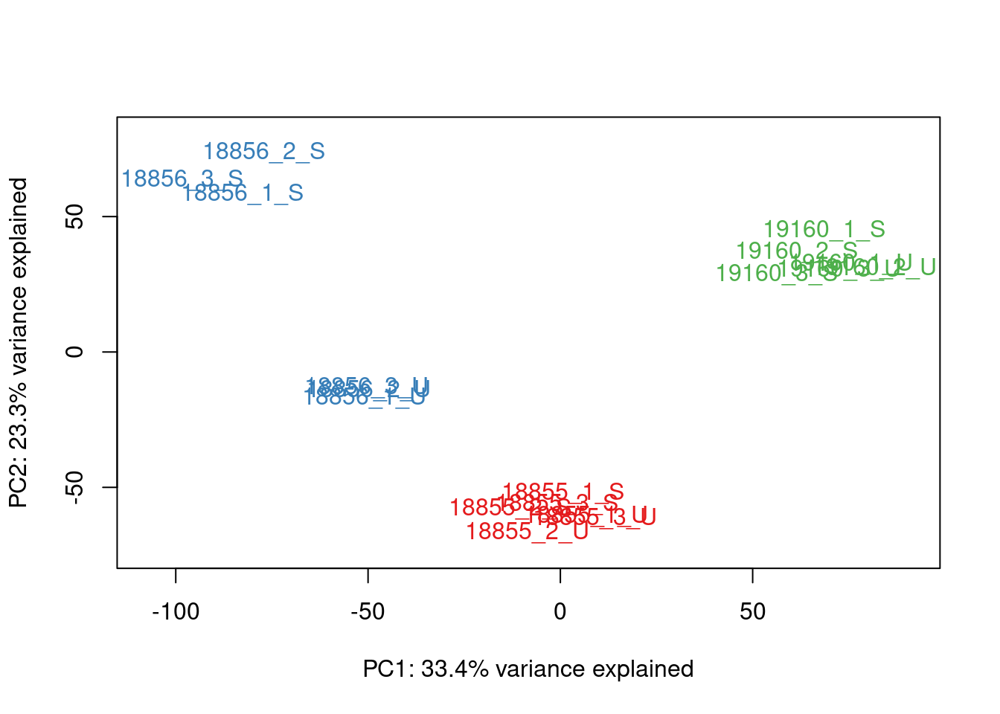
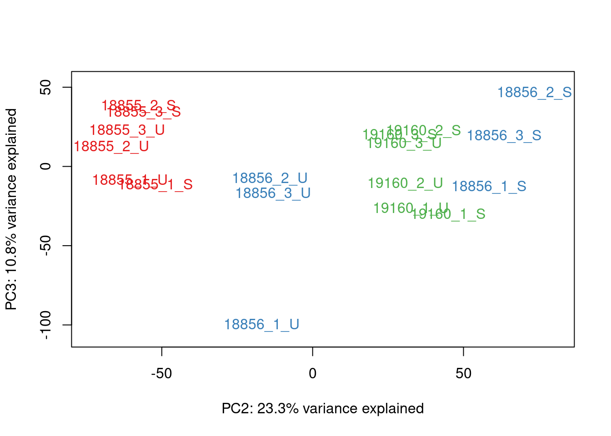
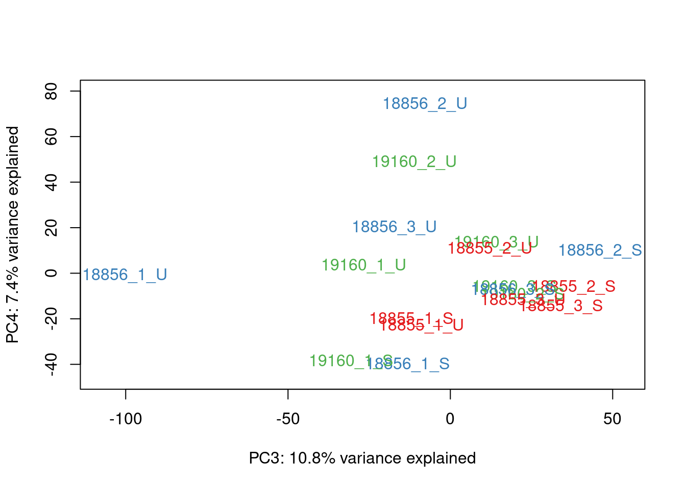
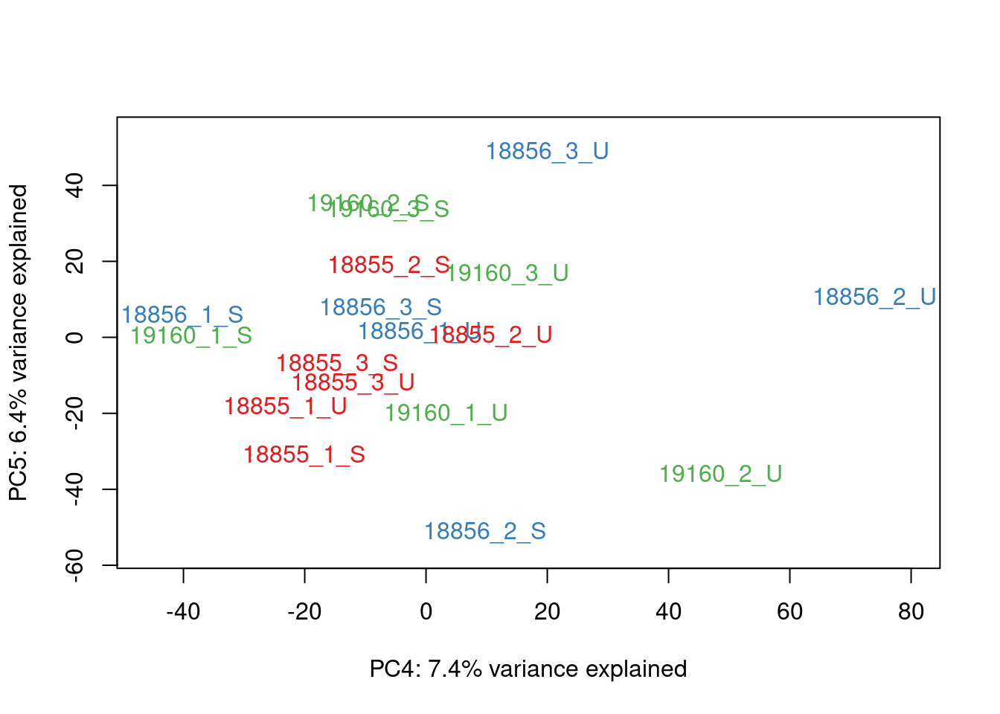
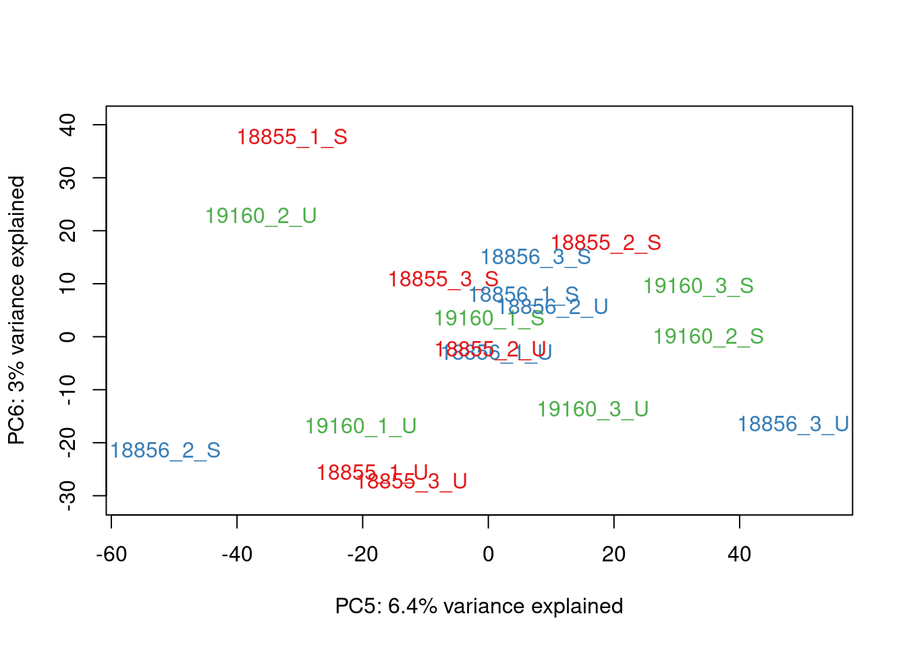
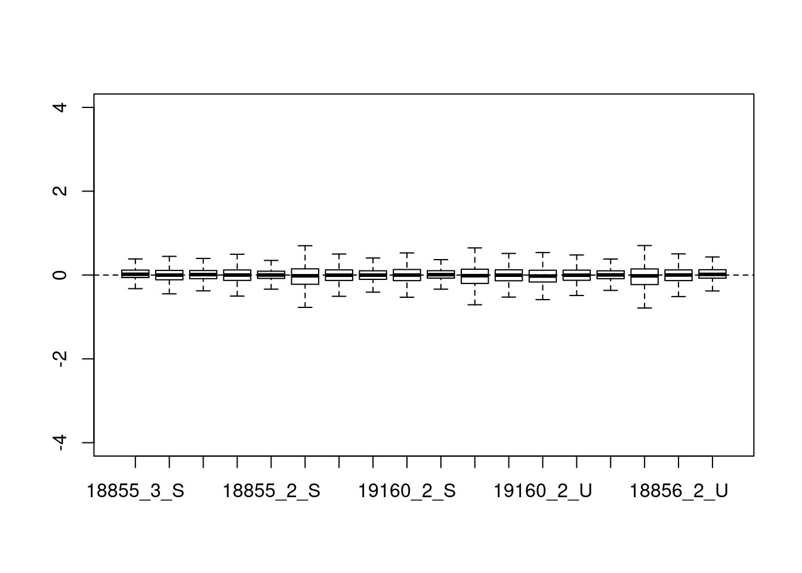
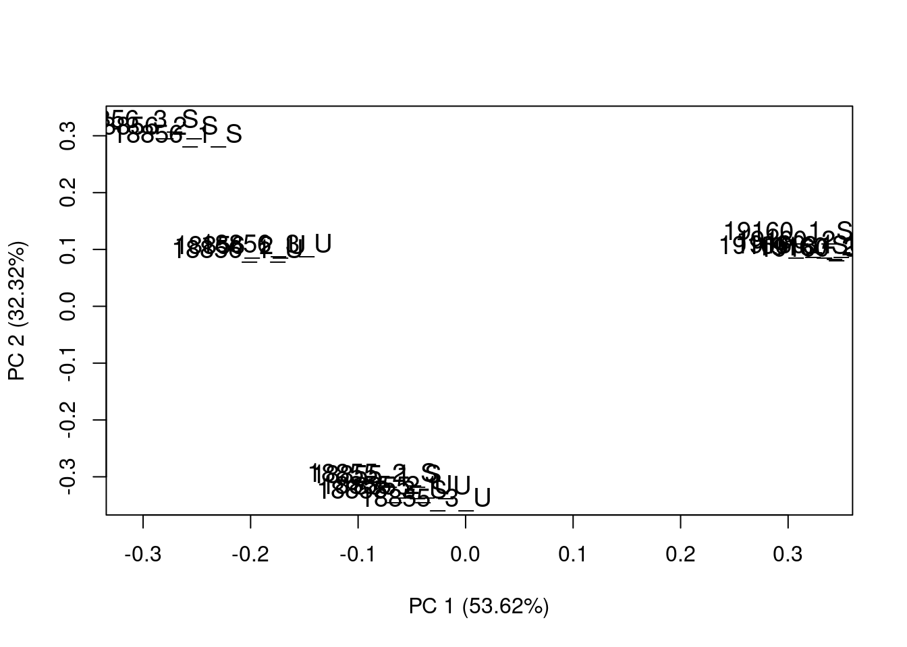
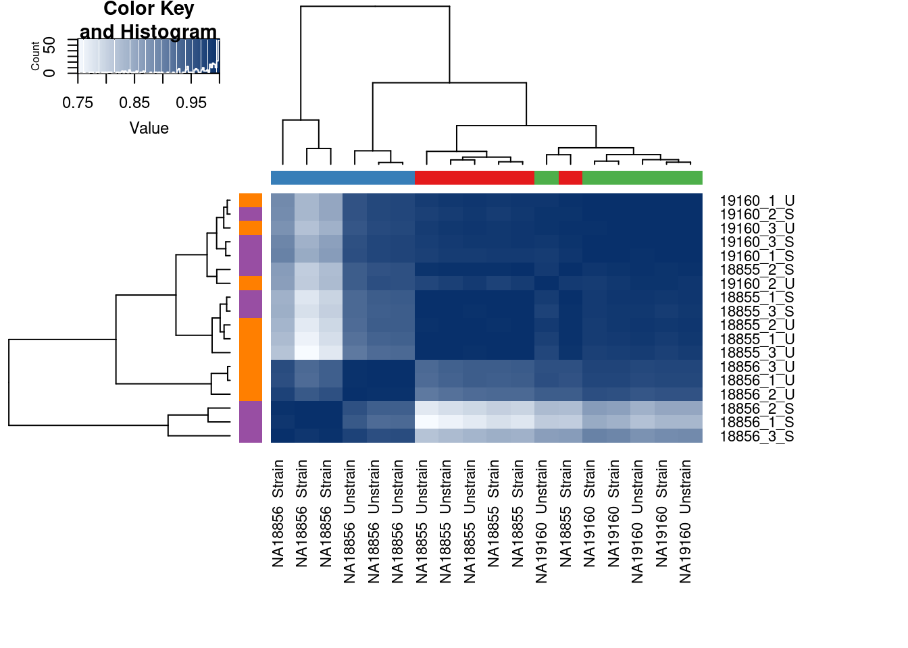

Analysis of Technical factors
Anthony Hung
2019-12-16
Last updated: 2020-11-29
Checks: 7 0
Knit directory: OAStrain/
This reproducible R Markdown analysis was created with workflowr (version 1.6.2). The Checks tab describes the reproducibility checks that were applied when the results were created. The Past versions tab lists the development history.
Great! Since the R Markdown file has been committed to the Git repository, you know the exact version of the code that produced these results.
Great job! The global environment was empty. Objects defined in the global environment can affect the analysis in your R Markdown file in unknown ways. For reproduciblity it’s best to always run the code in an empty environment.
The command set.seed(20191127) was run prior to running the code in the R Markdown file. Setting a seed ensures that any results that rely on randomness, e.g. subsampling or permutations, are reproducible.
Great job! Recording the operating system, R version, and package versions is critical for reproducibility.
Nice! There were no cached chunks for this analysis, so you can be confident that you successfully produced the results during this run.
Great job! Using relative paths to the files within your workflowr project makes it easier to run your code on other machines.
Great! You are using Git for version control. Tracking code development and connecting the code version to the results is critical for reproducibility.
The results in this page were generated with repository version ccaa3e4. See the Past versions tab to see a history of the changes made to the R Markdown and HTML files.
Note that you need to be careful to ensure that all relevant files for the analysis have been committed to Git prior to generating the results (you can use wflow_publish or wflow_git_commit). workflowr only checks the R Markdown file, but you know if there are other scripts or data files that it depends on. Below is the status of the Git repository when the results were generated:
Ignored files:
Ignored: .RData
Ignored: .Rhistory
Ignored: .Rproj.user/
Ignored: data/ANT1_2.rds
Ignored: data/DE_results.rds
Ignored: data/GoMresults.rds
Ignored: data/GoMresultsk3.rds
Ignored: data/GoMresultsk4.rds
Ignored: data/GoMresultsk5.rds
Ignored: data/GoMresultsk6.rds
Ignored: data/GoMresultsk7.rds
Ignored: data/GoMresultsk8.rds
Ignored: data/RUVsCPM.rds
Ignored: data/RUVsOut.rds
Ignored: data/SCT_ANT12_integrated.rds
Ignored: data/SCT_integrated_by_individual.rds
Ignored: data/Sample.info.full.RNAseq.reordered.csv
Ignored: data/Tachmazidou_30664745_ALLOA.txt.gz
Ignored: data/alasoo_etal/
Ignored: data/caliskan_etal/
Ignored: data/external_scRNA/
Ignored: data/filtered_counts.rds
Ignored: data/filtered_counts_full.rds
Ignored: data/gene-annotation_hg37.txt
Ignored: data/gom_sup3.rds
Ignored: data/gom_sup_3.rda
Ignored: data/gom_sup_noiPSCChond_3.rda
Ignored: data/log_normalized_ANT12_integrated.rds
Ignored: data/merged_topic_fit_7_classtpx_omega_fix_adMSC_ENCODEChond.rda
Ignored: data/merged_topic_fit_7_classtpx_omega_fix_allMSC_ENCODEChond.rda
Ignored: data/merged_topic_fit_7_classtpx_omega_fix_bmMSC1_ENCODEChond.rda
Ignored: data/merged_topic_fit_7_classtpx_omega_fix_bmMSC2_ENCODEChond.rda
Ignored: data/merged_topic_fit_8_classtpx_omega_fix_adMSC_ENCODEChond.rda
Ignored: data/merged_topic_fit_8_classtpx_omega_fix_allMSC_ENCODEChond.rda
Ignored: data/merged_topic_fit_8_classtpx_omega_fix_bmMSC1_ENCODEChond.rda
Ignored: data/merged_topic_fit_8_classtpx_omega_fix_bmMSC2_ENCODEChond.rda
Ignored: data/norm_filtered_counts.rds
Ignored: data/norm_filtered_counts_RLE.rds
Ignored: data/norm_filtered_counts_full.rds
Ignored: data/raw_counts_full_relabeled.rds
Ignored: data/raw_counts_relabeled.rds
Ignored: output/ANT1.2.rds
Ignored: output/GO_terms_enriched.csv
Ignored: output/LDSC-SEG/
Ignored: output/SNPs.csv
Ignored: output/ash_power_analysis/
Ignored: output/classtpx/
Ignored: output/eQTL_output_strain.csv
Ignored: output/eQTL_output_strain_INT.csv
Ignored: output/eQTL_output_unstrain.csv
Ignored: output/eQTL_output_unstrain_INT.csv
Ignored: output/fasttopics/
Ignored: output/interaction_genes.rds
Ignored: output/least_var_ctl_most_var_treat.rds
Ignored: output/mash/
Ignored: output/overlap_crossomic.rds
Ignored: output/overlap_fungenomic.rds
Ignored: output/pairwise_ttest_results_SCTdata.rds
Ignored: output/pairwise_ttest_results_integrateddata.rds
Ignored: output/permuted_results_DE.rds
Ignored: output/strain_top.rds
Ignored: output/strong_subset.rds
Ignored: output/strong_subset_INT.rds
Ignored: output/unstrain_top.rds
Ignored: output/voom_results.rds
Unstaged changes:
Modified: analysis/DE_analysis.Rmd
Modified: analysis/Norm_filter.Rmd
Modified: analysis/fasttopics_on_unintegrated_data.Rmd
Modified: analysis/raw_counts_analysis.Rmd
Modified: data/DEgenes_FDR05.rda
Modified: data/Sample.info.RNAseq.reordered.csv
Modified: fig-limma-treatment-hit-1.eps
Note that any generated files, e.g. HTML, png, CSS, etc., are not included in this status report because it is ok for generated content to have uncommitted changes.
These are the previous versions of the repository in which changes were made to the R Markdown (analysis/technical_factors_analysis.Rmd) and HTML (docs/technical_factors_analysis.html) files. If you’ve configured a remote Git repository (see ?wflow_git_remote), click on the hyperlinks in the table below to view the files as they were in that past version.
| File | Version | Author | Date | Message |
|---|---|---|---|---|
| Rmd | 0e96722 | Anthony Hung | 2020-10-29 | Add fasttopics on external data |
| html | 09ab774 | Anthony Hung | 2020-09-27 | add html files |
| html | e855314 | Anthony Hung | 2020-09-27 | delete html files |
| html | 23fbc99 | Anthony Hung | 2020-09-27 | move over html files |
| Rmd | 83148a8 | Anthony Hung | 2020-09-27 | add more PCs to PCA plot |
| Rmd | e3ee7ee | Anthony Hung | 2020-09-02 | add links to index page |
| html | e3ee7ee | Anthony Hung | 2020-09-02 | add links to index page |
| html | dd6a48b | Anthony Hung | 2020-05-28 | subset GWAS descriptions |
| Rmd | 51cceef | Anthony Hung | 2020-05-12 | box plot of pairwise correlations |
| Rmd | 2bbbdad | Anthony Hung | 2020-02-11 | Update html |
| html | 2bbbdad | Anthony Hung | 2020-02-11 | Update html |
| html | 797305a | Anthony Hung | 2020-01-18 | include Individual as a FE |
| html | a356514 | Anthony Hung | 2020-01-18 | knit analysis files |
| Rmd | cb6a0a5 | Anthony Hung | 2020-01-18 | edgeR DE analysis |
| html | cb6a0a5 | Anthony Hung | 2020-01-18 | edgeR DE analysis |
| Rmd | 629408f | Anthony Hung | 2020-01-16 | Getting to the bottom of the mystery of the changing correlation heatmaps – conclusion: filtering out lowly expressed genes is responsible |
| html | 629408f | Anthony Hung | 2020-01-16 | Getting to the bottom of the mystery of the changing correlation heatmaps – conclusion: filtering out lowly expressed genes is responsible |
| html | dacaeaf | Anthony Hung | 2020-01-16 | RUVseq with replicates |
| Rmd | 158fdf3 | Anthony Hung | 2020-01-15 | Use quant_normalization |
| html | 158fdf3 | Anthony Hung | 2020-01-15 | Use quant_normalization |
| Rmd | fd9ab65 | Anthony Hung | 2020-01-15 | Remove MSC from sample info |
| Rmd | 6c3b7d1 | Anthony Hung | 2020-01-15 | Add RIN Scores |
| html | 6c3b7d1 | Anthony Hung | 2020-01-15 | Add RIN Scores |
| html | 00a66fb | Anthony Hung | 2020-01-13 | run GO enrichment analysis |
| html | 5eb29e8 | Anthony Hung | 2020-01-13 | Knit analysis files |
| html | f1425df | Anthony Hung | 2020-01-13 | Correct CPM Cutoff strategy |
| Rmd | bd0e9ca | Anthony Hung | 2020-01-11 | Re-run analyses with real data |
| html | bd0e9ca | Anthony Hung | 2020-01-11 | Re-run analyses with real data |
| Rmd | b7948f0 | Anthony Hung | 2020-01-06 | DE analysis design matrix |
| html | 11d20cf | Anthony Hung | 2019-12-16 | Build site. |
| Rmd | 8a22392 | Anthony Hung | 2019-12-16 | wflow_publish(files = c(“analysis/preprocessing.Rmd”, |
| Rmd | a5c9482 | Anthony Hung | 2019-12-16 | run through with dummy data |
| Rmd | bb98d14 | Anthony Hung | 2019-12-16 | Add sampleinfo file |
| Rmd | c1f7cf7 | Anthony Hung | 2019-12-16 | Start up additional analysis files |
| Rmd | a8cef1a | Anthony Hung | 2019-12-16 | Create analysis files for analysis of BulkRNA pilot data |
Examine normalized/filtered data and see if any PCs correlate with technical factors
library("gplots")
Attaching package: 'gplots'The following object is masked from 'package:stats':
lowesslibrary("ggplot2")
library("reshape")
library("edgeR")Loading required package: limmalibrary("RColorBrewer")
library("scales")
library("cowplot")
Attaching package: 'cowplot'The following object is masked from 'package:reshape':
stamplibrary("DT")
library("tidyr")
Attaching package: 'tidyr'The following objects are masked from 'package:reshape':
expand, smithslibrary("RUVSeq")Loading required package: BiobaseLoading required package: BiocGenericsLoading required package: parallel
Attaching package: 'BiocGenerics'The following objects are masked from 'package:parallel':
clusterApply, clusterApplyLB, clusterCall, clusterEvalQ,
clusterExport, clusterMap, parApply, parCapply, parLapply,
parLapplyLB, parRapply, parSapply, parSapplyLBThe following object is masked from 'package:limma':
plotMAThe following objects are masked from 'package:stats':
IQR, mad, sd, var, xtabsThe following objects are masked from 'package:base':
anyDuplicated, append, as.data.frame, basename, cbind,
colnames, dirname, do.call, duplicated, eval, evalq, Filter,
Find, get, grep, grepl, intersect, is.unsorted, lapply, Map,
mapply, match, mget, order, paste, pmax, pmax.int, pmin,
pmin.int, Position, rank, rbind, Reduce, rownames, sapply,
setdiff, sort, table, tapply, union, unique, unsplit, which,
which.max, which.minWelcome to Bioconductor
Vignettes contain introductory material; view with
'browseVignettes()'. To cite Bioconductor, see
'citation("Biobase")', and for packages 'citation("pkgname")'.Loading required package: EDASeqLoading required package: ShortReadLoading required package: BiocParallelLoading required package: BiostringsLoading required package: S4VectorsLoading required package: stats4
Attaching package: 'S4Vectors'The following object is masked from 'package:tidyr':
expandThe following objects are masked from 'package:reshape':
expand, renameThe following object is masked from 'package:gplots':
spaceThe following object is masked from 'package:base':
expand.gridLoading required package: IRangesLoading required package: XVector
Attaching package: 'Biostrings'The following object is masked from 'package:base':
strsplitLoading required package: RsamtoolsLoading required package: GenomeInfoDbLoading required package: GenomicRangesLoading required package: GenomicAlignmentsLoading required package: SummarizedExperimentLoading required package: DelayedArrayLoading required package: matrixStats
Attaching package: 'matrixStats'The following objects are masked from 'package:Biobase':
anyMissing, rowMedians
Attaching package: 'DelayedArray'The following objects are masked from 'package:matrixStats':
colMaxs, colMins, colRanges, rowMaxs, rowMins, rowRangesThe following object is masked from 'package:Biostrings':
typeThe following objects are masked from 'package:base':
aperm, apply, rowsumlibrary("dplyr")
Attaching package: 'dplyr'The following object is masked from 'package:ShortRead':
idThe following objects are masked from 'package:GenomicAlignments':
first, lastThe following object is masked from 'package:matrixStats':
countThe following objects are masked from 'package:GenomicRanges':
intersect, setdiff, unionThe following object is masked from 'package:GenomeInfoDb':
intersectThe following objects are masked from 'package:Biostrings':
collapse, intersect, setdiff, setequal, unionThe following object is masked from 'package:XVector':
sliceThe following objects are masked from 'package:IRanges':
collapse, desc, intersect, setdiff, slice, unionThe following objects are masked from 'package:S4Vectors':
first, intersect, rename, setdiff, setequal, unionThe following object is masked from 'package:Biobase':
combineThe following objects are masked from 'package:BiocGenerics':
combine, intersect, setdiff, unionThe following object is masked from 'package:reshape':
renameThe following objects are masked from 'package:stats':
filter, lagThe following objects are masked from 'package:base':
intersect, setdiff, setequal, union# Load colors
colors <- colorRampPalette(c(brewer.pal(9, "Blues")[1],brewer.pal(9, "Blues")[9]))(100)
pal <- c(brewer.pal(9, "Set1"), brewer.pal(8, "Set2"), brewer.pal(12, "Set3"))
#load in normalized/filtered data
filt_norm_counts <- readRDS("data/norm_filtered_counts.rds")
#load in filtered counts
filt_counts <- readRDS("data/filtered_counts.rds")
# load in reordered sample information
sampleinfo <- readRDS("data/Sample.info.RNAseq.reordered.csv")PCA and hierarchical clustering of normalized and filtered data
#Load PCA plotting Function
source("code/PCA_fn.R")
#spearman
cors <- cor(filt_norm_counts, method="spearman", use="pairwise.complete.obs")
labels <- paste(sampleinfo$Individual, sampleinfo$treatment, sep=" ")
heatmap.2( cors, scale="none", col = colors, margins = c(12, 12), trace='none', denscol="white", labCol=labels, ColSideColors=pal[as.integer(as.factor(sampleinfo$Individual))], RowSideColors=pal[as.integer(as.factor(sampleinfo$treatment))+3], cexCol = 0.2 + 1/log10(15), cexRow = 0.2 + 1/log10(15))
#extract correlations between technical replicates
coords <- cbind(rbind(c(1,5),c(1,10), c(2,9), c(2,12), c(3,4), c(3,16), c(4,16), c(5,10), c(6,11), c(6,15), c(7,13), c(8,14), c(8,17), c(9,12), c(11,15), c(14,17)))
colnames(coords) <- c("index1","index2")
coords index1 index2
[1,] 1 5
[2,] 1 10
[3,] 2 9
[4,] 2 12
[5,] 3 4
[6,] 3 16
[7,] 4 16
[8,] 5 10
[9,] 6 11
[10,] 6 15
[11,] 7 13
[12,] 8 14
[13,] 8 17
[14,] 9 12
[15,] 11 15
[16,] 14 17cors_technical <- cors[coords]
median(cors_technical)[1] 0.9770607min(cors_technical)[1] 0.8862407#pearson
cors <- cor(filt_norm_counts, method="pearson", use="pairwise.complete.obs")
labels <- paste(sampleinfo$Individual, sampleinfo$treatment, sep=" ")
heatmap.2( cors, scale="none", col = colors, margins = c(12, 12), trace='none', denscol="white", labCol=labels, ColSideColors=pal[as.integer(as.factor(sampleinfo$Individual))], RowSideColors=pal[as.integer(as.factor(sampleinfo$treatment))+3], cexCol = 0.2 + 1/log10(15), cexRow = 0.2 + 1/log10(15))
Perform PCA and color by factors to look for any potential correlations
# Perform PCA
pca_genes <- prcomp(t(filt_norm_counts), scale = T)
scores <- pca_genes$x
variances <- pca_genes$sdev^2
explained <- variances / sum(variances)
plot(pca_genes, main = "Variance per PC")
#Make PCA plots with the factors colored by Individual
### PCA norm+filt Data
for (n in 1:5){
col.v <- pal[as.integer(sampleinfo$Individual)]
plot_scores(pca_genes, scores, n, n+1, col.v)
}



| Version | Author | Date |
|---|---|---|
| 70fce3a | Anthony Hung | 2020-09-27 |

| Version | Author | Date |
|---|---|---|
| 70fce3a | Anthony Hung | 2020-09-27 |
Check that technical factors do not correlate with PCs
# Calculate the relationship between each recorded covariate and the top 5 PCs.
p_comps <- 1:5
info <- sampleinfo %>%
dplyr::select(c(Individual, Sex, Replicate, treatment, RIN, LibraryPrepBatch, LibSize)) #subset sample info for technical/biological variables
#Calculate correlations
pc_cov_cor <- matrix(nrow = ncol(info), ncol = length(p_comps),
dimnames = list(colnames(info), colnames(pca_genes$x)[p_comps]))
PC_pvalues <- matrix(data = NA, nrow = 5, ncol = 7, dimnames = list(c("PC1", "PC2", "PC3", "PC4", "PC5"), c("Individual", "Sex", "Replicate", "Treatment", "RIN", "LibraryPrepBatch", "LibSize")))
for (pc in p_comps) {
for (covariate in 1:ncol(info)) {
lm_result <- lm(pca_genes$x[, pc] ~ info[, covariate])
r2 <- summary(lm_result)$r.squared
fstat <- as.data.frame(summary(lm_result)$fstatistic)
p_fstat <- 1-pf(fstat[1,], fstat[2,], fstat[3,])
PC_pvalues[pc, covariate] <- p_fstat
pc_cov_cor[covariate, pc] <- r2
}
}
datatable(pc_cov_cor) #make PCA plots with symbols as treatment status and colors as individuals for figure
library(ggfortify)
autoplot(pca_genes, data = sampleinfo, colour = "Individual", shape = "treatment", size = 3) +
theme_cowplot() +
theme(legend.position = "none")
| Version | Author | Date |
|---|---|---|
| e3ee7ee | Anthony Hung | 2020-09-02 |
| dd6a48b | Anthony Hung | 2020-05-28 |
| cb6a0a5 | Anthony Hung | 2020-01-18 |
| 629408f | Anthony Hung | 2020-01-16 |
| 158fdf3 | Anthony Hung | 2020-01-15 |
| 6c3b7d1 | Anthony Hung | 2020-01-15 |
| 5eb29e8 | Anthony Hung | 2020-01-13 |
| f1425df | Anthony Hung | 2020-01-13 |
| bd0e9ca | Anthony Hung | 2020-01-11 |
autoplot(pca_genes, data = sampleinfo, colour = "Individual", shape = "treatment") +
theme_cowplot()
| Version | Author | Date |
|---|---|---|
| e3ee7ee | Anthony Hung | 2020-09-02 |
autoplot(pca_genes, data = sampleinfo, colour = "Individual", shape = "treatment", size = 3, x = 3, y = 4) +
theme_cowplot() +
theme(legend.position = "none")
autoplot(pca_genes, data = sampleinfo, colour = "Individual", shape = "treatment", size = 3, x = 5, y = 6) +
theme_cowplot() +
theme(legend.position = "none")
#BH adjust for multiple testing for the p-values for correlation
#Distribution of p-values adjusted by FDR
fdr_val <- p.adjust(PC_pvalues, method = "fdr", n = length(PC_pvalues))
fdr_val_order <- fdr_val[order(fdr_val)]
hist(fdr_val_order, ylab = "BH-adjusted p-values", main = "Distribution of Benjamini and Hochberg adjusted p-values", breaks = 10)
fdr_val <- matrix(fdr_val, nrow = 5, ncol = 7)
matrix_fdr_val <- matrix(fdr_val, nrow = 5, ncol = 7, dimnames = list(c("PC1", "PC2", "PC3", "PC4", "PC5"), c("Individual", "Sex", "Replicate", "Treatment", "RIN", "LibraryPrepBatch", "LibSize")))
#Get the coordinates of which variables/PC combinations are significant at FDR 5%
TorF_matrix_fdr <- matrix_fdr_val <=0.05
coor_to_check <- which(matrix_fdr_val <= 0.05, arr.ind=T)
coor_to_check <- as.data.frame(coor_to_check)
matrix_fdr_val Individual Sex Replicate Treatment RIN
PC1 5.627846e-09 9.581839e-01 0.95818388 0.7927186 0.07574047
PC2 2.583205e-04 5.060543e-05 0.95818388 0.5040144 0.33495267
PC3 7.306246e-01 5.040144e-01 0.07574047 0.3349527 0.95818388
PC4 7.927186e-01 5.247900e-01 0.52479001 0.1100563 0.79271862
PC5 9.499174e-01 6.409635e-01 0.33495267 0.9581839 0.95818388
LibraryPrepBatch LibSize
PC1 0.9581839 0.5040144
PC2 0.9581839 0.5719140
PC3 0.5040144 0.9581839
PC4 0.9581839 0.9581839
PC5 0.3349527 0.5040144coor_to_check # Individual has most significant correlation with pc1 and 2, and sex correlates with pc2 (probably due to the individual effect) row col
PC1 1 1
PC2 2 1
PC2.1 2 2#Convert to long format to plot in ggplot2
pc_cov_cor_2 <- as.data.frame(pc_cov_cor)
pc_cov_cor_2$variable <- rownames(pc_cov_cor)
pc_cov_cor_2 <- gather(pc_cov_cor_2, key = "pc", value = "cor", -variable)
head(pc_cov_cor_2) variable pc cor
1 Individual PC1 0.9505495894
2 Sex PC1 0.0001772594
3 Replicate PC1 0.0012126021
4 treatment PC1 0.0272088903
5 RIN PC1 0.3418505365
6 LibraryPrepBatch PC1 0.0006038124#Plot heatmap
d_heatmap <- pc_cov_cor_2
d_heatmap$variable <- factor(d_heatmap$variable,
levels = c("Individual", "Sex", "Replicate",
"treatment", "RIN", "LibraryPrepBatch", "LibSize"),
labels = c("Individual", "Sex", "Replicate",
"treatment", "RIN", "LibraryPrepBatch", "LibSize"))
pca_heat <- ggplot(d_heatmap, aes(x = pc, y = variable)) +
geom_tile(aes(fill = cor), colour = "white") +
scale_fill_gradient(low = "white", high = "red", limits = c(0, 1)) +
labs(x = "Principal Component", y = "",
title = "Correlation between principal components and experimental variables")
pca_heat
Remove unwanted variation using RUVSeq
#The RUVSeq vignette loads raw counts and uses the RUVSeq package to filter and normalize data (upper quantile normalization) before performing RUVs.
#Use RUVs (replicates) and adjust k until corr heatmap looks right
replicates <- makeGroups(paste0(sampleinfo$Individual, sampleinfo$treatment))
x <- paste0(sampleinfo$Individual, sampleinfo$treatment)
#load data into expressionset
set <- newSeqExpressionSet(as.matrix(filt_counts$counts),
phenoData = data.frame(sampleinfo, row.names=colnames(filt_norm_counts)))
setSeqExpressionSet (storageMode: lockedEnvironment)
assayData: 10517 features, 18 samples
element names: counts, normalizedCounts, offset
protocolData: none
phenoData
sampleNames: 18855_3_S 19160_3_S ... 18855_3_U (18 total)
varLabels: Sample_ID Individual ... LibSize (8 total)
varMetadata: labelDescription
featureData: none
experimentData: use 'experimentData(object)'
Annotation: #normalization
set <- betweenLaneNormalization(x = set, which = "upper", round = T)
#Spearman
cors <- cor(set@assayData$normalizedCounts, method="spearman", use="pairwise.complete.obs")
labels <- paste(sampleinfo$Individual, sampleinfo$treatment, sep=" ")
heatmap.2( cors, scale="none", col = colors, margins = c(12, 12), trace='none', denscol="white", labCol=labels, ColSideColors=pal[as.integer(as.factor(sampleinfo$Individual))], RowSideColors=pal[as.integer(as.factor(sampleinfo$treatment))+3], cexCol = 0.2 + 1/log10(15), cexRow = 0.2 + 1/log10(15))
#Pearson
cors <- cor(set@assayData$normalizedCounts, method="pearson", use="pairwise.complete.obs")
labels <- paste(sampleinfo$Individual, sampleinfo$treatment, sep=" ")
heatmap.2( cors, scale="none", col = colors, margins = c(12, 12), trace='none', denscol="white", labCol=labels, ColSideColors=pal[as.integer(as.factor(sampleinfo$Individual))], RowSideColors=pal[as.integer(as.factor(sampleinfo$treatment))+3], cexCol = 0.2 + 1/log10(15), cexRow = 0.2 + 1/log10(15))
#
set1 <- RUVs(x=set, cIdx = rownames(filt_counts), k=2, scIdx = replicates, round = F)
pData(set1) Sample_ID Individual Sex Replicate treatment RIN
18855_3_S 18855_3_S NA18855 F 3 Strain 10.0
19160_3_S 19160_3_S NA19160 M 3 Strain 10.0
18856_3_U 18856_3_U NA18856 M 3 Unstrain 10.0
18856_1_U 18856_1_U NA18856 M 1 Unstrain 9.9
18855_2_S 18855_2_S NA18855 F 2 Strain 10.0
18856_2_S 18856_2_S NA18856 M 2 Strain 9.6
19160_3_U 19160_3_U NA19160 M 3 Unstrain 10.0
18855_2_U 18855_2_U NA18855 F 2 Unstrain 10.0
19160_2_S 19160_2_S NA19160 M 2 Strain 10.0
18855_1_S 18855_1_S NA18855 F 1 Strain 9.9
18856_1_S 18856_1_S NA18856 M 1 Strain 8.5
19160_1_S 19160_1_S NA19160 M 1 Strain 9.9
19160_2_U 19160_2_U NA19160 M 2 Unstrain 10.0
19160_1_U 19160_1_U NA19160 M 1 Unstrain 10.0
18855_1_U 18855_1_U NA18855 F 1 Unstrain 10.0
18856_3_S 18856_3_S NA18856 M 3 Strain 9.6
18856_2_U 18856_2_U NA18856 M 2 Unstrain 9.5
18855_3_U 18855_3_U NA18855 F 3 Unstrain 10.0
LibraryPrepBatch LibSize W_1 W_2
18855_3_S 2 15419569 1.0461342 1.0291024
19160_3_S 2 15177653 0.9275759 1.3447813
18856_3_U 2 13722909 1.2980016 0.7203782
18856_1_U 1 18647599 1.7035027 1.2905593
18855_2_S 1 18256163 1.1514555 0.6358908
18856_2_S 1 16782764 0.5648901 1.4068531
19160_3_U 2 19839604 0.7936766 1.5178006
18855_2_U 1 18618691 1.1213582 0.8295484
19160_2_S 1 16622407 0.8793804 1.4600238
18855_1_S 1 19712744 1.2162812 1.4063110
18856_1_S 1 13571439 1.5745139 1.0484461
19160_1_S 1 20979958 1.1518808 1.9192668
19160_2_U 1 20924281 0.6517344 1.9131873
19160_1_U 1 11606712 1.0060600 1.8332507
18855_1_U 1 20146697 1.2224707 1.2856797
18856_3_S 2 15807863 1.2120059 0.8530949
18856_2_U 1 15142152 0.8855426 1.0383840
18855_3_U 2 18157918 1.0144297 1.1522901#Plots after correcting RUV
plotRLE(set1, outline=FALSE, ylim=c(-4, 4), col=colors[x])
| Version | Author | Date |
|---|---|---|
| e3ee7ee | Anthony Hung | 2020-09-02 |
| dd6a48b | Anthony Hung | 2020-05-28 |
| cb6a0a5 | Anthony Hung | 2020-01-18 |
| 629408f | Anthony Hung | 2020-01-16 |
| 158fdf3 | Anthony Hung | 2020-01-15 |
| 6c3b7d1 | Anthony Hung | 2020-01-15 |
| 5eb29e8 | Anthony Hung | 2020-01-13 |
| f1425df | Anthony Hung | 2020-01-13 |
| bd0e9ca | Anthony Hung | 2020-01-11 |
plotPCA(set1, col=colors[x], cex=1.2)
#Spearman
cors <- cor(set1@assayData$normalizedCounts, method="spearman", use="pairwise.complete.obs")
labels <- paste(sampleinfo$Individual, sampleinfo$treatment, sep=" ")
heatmap.2( cors, scale="none", col = colors, margins = c(12, 12), trace='none', denscol="white", labCol=labels, ColSideColors=pal[as.integer(as.factor(sampleinfo$Individual))], RowSideColors=pal[as.integer(as.factor(sampleinfo$treatment))+3], cexCol = 0.2 + 1/log10(15), cexRow = 0.2 + 1/log10(15))
#extract correlations between technical replicates
coords <- cbind(rbind(c(1,5),c(1,10), c(2,9), c(2,12), c(3,4), c(3,16), c(4,16), c(5,10), c(6,11), c(6,15), c(7,13), c(8,14), c(8,17), c(9,12), c(11,15), c(14,17)))
colnames(coords) <- c("index1","index2")
coords index1 index2
[1,] 1 5
[2,] 1 10
[3,] 2 9
[4,] 2 12
[5,] 3 4
[6,] 3 16
[7,] 4 16
[8,] 5 10
[9,] 6 11
[10,] 6 15
[11,] 7 13
[12,] 8 14
[13,] 8 17
[14,] 9 12
[15,] 11 15
[16,] 14 17cors_technical <- cors[coords]
median(cors_technical)[1] 0.9931285min(cors_technical)[1] 0.9088598#Pearson
cors <- cor(set1@assayData$normalizedCounts, method="pearson", use="pairwise.complete.obs")
labels <- paste(sampleinfo$Individual, sampleinfo$treatment, sep=" ")
heatmap.2( cors, scale="none", col = colors, margins = c(12, 12), trace='none', denscol="white", labCol=labels, ColSideColors=pal[as.integer(as.factor(sampleinfo$Individual))], RowSideColors=pal[as.integer(as.factor(sampleinfo$treatment))+3], cexCol = 0.2 + 1/log10(15), cexRow = 0.2 + 1/log10(15))
“The RUVg [RUVs] function returns two pieces of information: the estimated factors of unwanted variation (added as columns to the phenoData slot of set) and the normalized counts obtained by regressing the original counts on the unwanted factors. The normalized values are stored in the normalizedCounts slot of set and can be accessed with the normCounts method. These counts should be used only for exploration. It is important that subsequent DE analysis be done on the original counts (accessible through the counts method), as removing the unwanted factors from the counts can also remove part of a factor of interest [6].”
Check that technical factors do not correlate with PCs after RUVs
# Perform PCA
pca_genes <- prcomp(t(set1@assayData$normalizedCounts), scale = T)
scores <- pca_genes$x
variances <- pca_genes$sdev^2
explained <- variances / sum(variances)
plot(pca_genes, main = "Variance per PC")
#Make PCA plots with the factors colored by Individual
### PCA norm+filt Data
for (n in 1:5){
col.v <- pal[as.integer(sampleinfo$Individual)]
plot_scores(pca_genes, scores, n, n+1, col.v)
}
| Version | Author | Date |
|---|---|---|
| 70fce3a | Anthony Hung | 2020-09-27 |


| Version | Author | Date |
|---|---|---|
| 70fce3a | Anthony Hung | 2020-09-27 |

| Version | Author | Date |
|---|---|---|
| 70fce3a | Anthony Hung | 2020-09-27 |
#make PCA plots with symbols as treatment status and colors as individuals for figure
library(ggfortify)
autoplot(pca_genes, data = sampleinfo, colour = "Individual", shape = "treatment", size = 3) +
theme_cowplot() +
theme(legend.position = "none")
autoplot(pca_genes, data = sampleinfo, colour = "Individual", shape = "treatment") +
theme_cowplot()
| Version | Author | Date |
|---|---|---|
| 70fce3a | Anthony Hung | 2020-09-27 |
autoplot(pca_genes, data = sampleinfo, colour = "Individual", shape = "treatment", size = 3, x = 3, y = 4) +
theme_cowplot() +
theme(legend.position = "none")
| Version | Author | Date |
|---|---|---|
| 70fce3a | Anthony Hung | 2020-09-27 |
autoplot(pca_genes, data = sampleinfo, colour = "Individual", shape = "treatment", size = 3, x = 5, y = 6) +
theme_cowplot() +
theme(legend.position = "none")
# Calculate the relationship between each recorded covariate and the top 5 PCs.
p_comps <- 1:5
info <- sampleinfo %>%
dplyr::select(c(Individual, Sex, Replicate, treatment, RIN, LibraryPrepBatch, LibSize)) #subset sample info for technical/biological variables
#Calculate correlations
pc_cov_cor <- matrix(nrow = ncol(info), ncol = length(p_comps),
dimnames = list(colnames(info), colnames(pca_genes$x)[p_comps]))
PC_pvalues <- matrix(data = NA, nrow = 5, ncol = 7, dimnames = list(c("PC1", "PC2", "PC3", "PC4", "PC5"), c("Individual", "Sex", "Replicate", "Treatment", "RIN", "LibraryPrepBatch", "LibSize")))
for (pc in p_comps) {
for (covariate in 1:ncol(info)) {
lm_result <- lm(pca_genes$x[, pc] ~ info[, covariate])
r2 <- summary(lm_result)$r.squared
fstat <- as.data.frame(summary(lm_result)$fstatistic)
p_fstat <- 1-pf(fstat[1,], fstat[2,], fstat[3,])
PC_pvalues[pc, covariate] <- p_fstat
pc_cov_cor[covariate, pc] <- r2
}
}
datatable(pc_cov_cor) #BH adjust for multiple testing for the p-values for correlation
#Distribution of p-values adjusted by FDR
fdr_val <- p.adjust(PC_pvalues, method = "fdr", n = length(PC_pvalues))
fdr_val_order <- fdr_val[order(fdr_val)]
hist(fdr_val_order, ylab = "BH-adjusted p-values", main = "Distribution of Benjamini and Hochberg adjusted p-values", breaks = 10)
fdr_val <- matrix(fdr_val, nrow = 5, ncol = 7)
matrix_fdr_val <- matrix(fdr_val, nrow = 5, ncol = 7, dimnames = list(c("PC1", "PC2", "PC3", "PC4", "PC5"), c("Individual", "Sex", "Replicate", "Treatment", "RIN", "LibraryPrepBatch", "LibSize")))
#Get the coordinates of which variables/PC combinations are significant at FDR 5%
TorF_matrix_fdr <- matrix_fdr_val <=0.05
coor_to_check <- which(matrix_fdr_val <= 0.05, arr.ind=T)
coor_to_check <- as.data.frame(coor_to_check)
matrix_fdr_val Individual Sex Replicate Treatment RIN
PC1 1.114042e-09 9.978771e-01 0.9978771 0.99787707 0.08427204
PC2 3.037494e-04 5.311337e-05 0.9978771 0.56419715 0.25793302
PC3 4.845085e-01 2.545279e-01 0.9978771 0.01940295 0.99787707
PC4 9.978771e-01 9.978771e-01 0.9978771 0.99787707 0.99787707
PC5 9.978771e-01 9.978771e-01 0.9978771 0.07859157 0.99787707
LibraryPrepBatch LibSize
PC1 0.9978771 0.7708600
PC2 0.9978771 0.7708600
PC3 0.9978771 0.9978771
PC4 0.9978771 0.9978771
PC5 0.9978771 0.9978771coor_to_check # Individual has most significant correlation with pc1 and 2, and sex correlates with pc2 (probably due to the individual effect) row col
PC1 1 1
PC2 2 1
PC2.1 2 2
PC3 3 4#Convert to long format to plot in ggplot2
pc_cov_cor_2 <- as.data.frame(pc_cov_cor)
pc_cov_cor_2$variable <- rownames(pc_cov_cor)
pc_cov_cor_2 <- gather(pc_cov_cor_2, key = "pc", value = "cor", -variable)
head(pc_cov_cor_2) variable pc cor
1 Individual PC1 0.9601546367
2 Sex PC1 0.0028248927
3 Replicate PC1 0.0002699231
4 treatment PC1 0.0192696896
5 RIN PC1 0.3198112644
6 LibraryPrepBatch PC1 0.0006579861#Plot heatmap
d_heatmap <- pc_cov_cor_2
d_heatmap$variable <- factor(d_heatmap$variable,
levels = c("Individual", "Sex", "Replicate",
"treatment", "RIN", "LibraryPrepBatch", "LibSize"),
labels = c("Individual", "Sex", "Replicate",
"treatment", "RIN", "LibraryPrepBatch", "LibSize"))
pca_heat <- ggplot(d_heatmap, aes(x = pc, y = variable)) +
geom_tile(aes(fill = cor), colour = "white") +
scale_fill_gradient(low = "white", high = "red", limits = c(0, 1)) +
labs(x = "Principal Component", y = "",
title = "Correlation between principal components and experimental variables")
pca_heat
Save data and RUVs output for unwanted variation (contains the same cpm data as before as well as pheno data, W values from RUVs)
saveRDS(set1, "data/RUVsOut.rds")
sessionInfo()R version 3.6.1 (2019-07-05)
Platform: x86_64-pc-linux-gnu (64-bit)
Running under: Scientific Linux 7.4 (Nitrogen)
Matrix products: default
BLAS/LAPACK: /software/openblas-0.2.19-el7-x86_64/lib/libopenblas_haswellp-r0.2.19.so
locale:
[1] LC_CTYPE=en_US.UTF-8 LC_NUMERIC=C
[3] LC_TIME=en_US.UTF-8 LC_COLLATE=en_US.UTF-8
[5] LC_MONETARY=en_US.UTF-8 LC_MESSAGES=en_US.UTF-8
[7] LC_PAPER=en_US.UTF-8 LC_NAME=C
[9] LC_ADDRESS=C LC_TELEPHONE=C
[11] LC_MEASUREMENT=en_US.UTF-8 LC_IDENTIFICATION=C
attached base packages:
[1] stats4 parallel stats graphics grDevices utils datasets
[8] methods base
other attached packages:
[1] ggfortify_0.4.10 dplyr_1.0.2
[3] RUVSeq_1.18.0 EDASeq_2.18.0
[5] ShortRead_1.42.0 GenomicAlignments_1.20.1
[7] SummarizedExperiment_1.14.1 DelayedArray_0.10.0
[9] matrixStats_0.57.0 Rsamtools_2.0.0
[11] GenomicRanges_1.36.1 GenomeInfoDb_1.20.0
[13] Biostrings_2.52.0 XVector_0.24.0
[15] IRanges_2.18.3 S4Vectors_0.22.1
[17] BiocParallel_1.18.1 Biobase_2.44.0
[19] BiocGenerics_0.30.0 tidyr_1.1.2
[21] DT_0.15 cowplot_1.1.0
[23] scales_1.1.1 RColorBrewer_1.1-2
[25] edgeR_3.26.5 limma_3.40.6
[27] reshape_0.8.8 ggplot2_3.3.2
[29] gplots_3.0.1.1
loaded via a namespace (and not attached):
[1] colorspace_1.4-1 hwriter_1.3.2 ellipsis_0.3.1
[4] rprojroot_1.3-2 fs_1.3.1 farver_2.0.3
[7] bit64_0.9-7 AnnotationDbi_1.46.0 splines_3.6.1
[10] R.methodsS3_1.8.1 DESeq_1.36.0 geneplotter_1.62.0
[13] knitr_1.23 jsonlite_1.7.1 workflowr_1.6.2
[16] annotate_1.62.0 R.oo_1.24.0 compiler_3.6.1
[19] httr_1.4.2 backports_1.1.10 Matrix_1.2-18
[22] later_1.1.0.1 htmltools_0.5.0 prettyunits_1.1.1
[25] tools_3.6.1 gtable_0.3.0 glue_1.4.2
[28] GenomeInfoDbData_1.2.1 Rcpp_1.0.5 vctrs_0.3.4
[31] gdata_2.18.0 rtracklayer_1.44.0 crosstalk_1.1.0.1
[34] xfun_0.8 stringr_1.4.0 lifecycle_0.2.0
[37] gtools_3.8.1 XML_3.98-1.20 zlibbioc_1.30.0
[40] MASS_7.3-52 aroma.light_3.14.0 hms_0.5.3
[43] promises_1.1.1 yaml_2.2.1 memoise_1.1.0
[46] gridExtra_2.3 biomaRt_2.40.1 latticeExtra_0.6-28
[49] stringi_1.4.6 RSQLite_2.1.1 genefilter_1.66.0
[52] GenomicFeatures_1.36.3 caTools_1.17.1.2 rlang_0.4.8
[55] pkgconfig_2.0.3 bitops_1.0-6 evaluate_0.14
[58] lattice_0.20-41 purrr_0.3.4 labeling_0.3
[61] htmlwidgets_1.5.2 bit_4.0.4 tidyselect_1.1.0
[64] plyr_1.8.6 magrittr_1.5 R6_2.4.1
[67] generics_0.0.2 DBI_1.1.0 pillar_1.4.6
[70] whisker_0.3-2 withr_2.3.0 survival_2.44-1.1
[73] RCurl_1.98-1.1 tibble_3.0.4 crayon_1.3.4
[76] KernSmooth_2.23-15 rmarkdown_1.13 progress_1.2.2
[79] locfit_1.5-9.1 grid_3.6.1 blob_1.2.0
[82] git2r_0.26.1 digest_0.6.25 xtable_1.8-4
[85] httpuv_1.5.1 R.utils_2.9.0 munsell_0.5.0